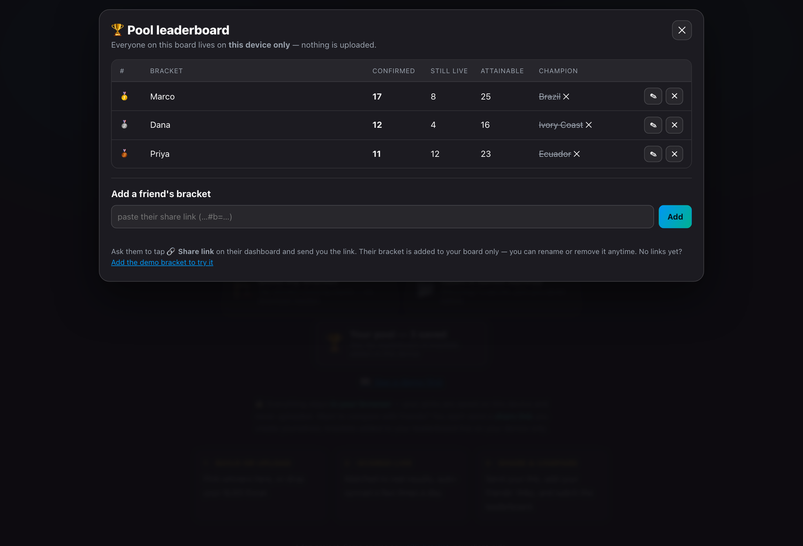
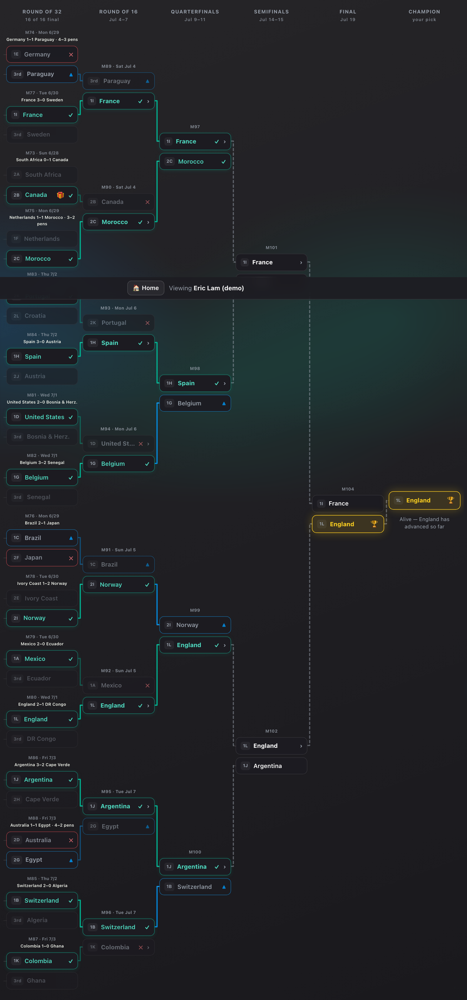
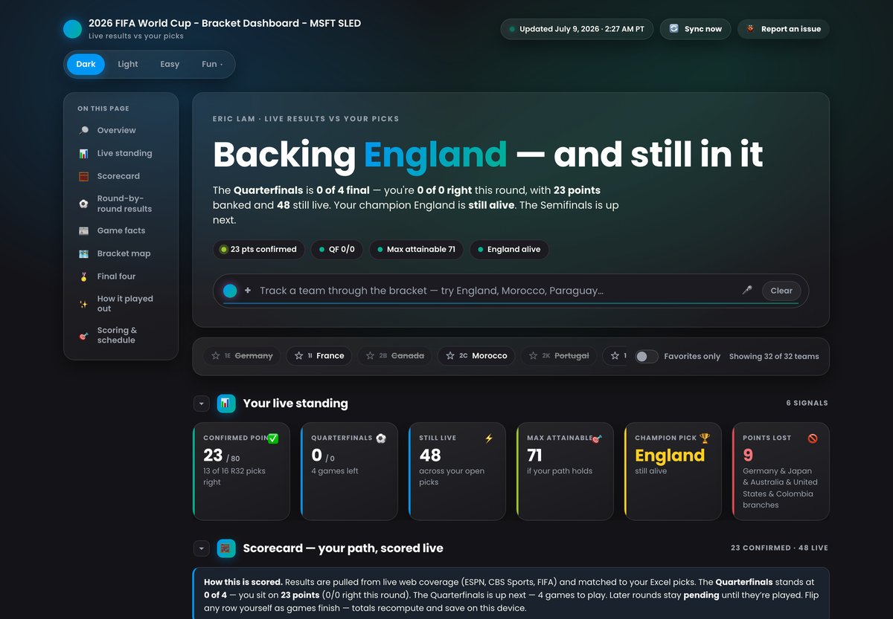
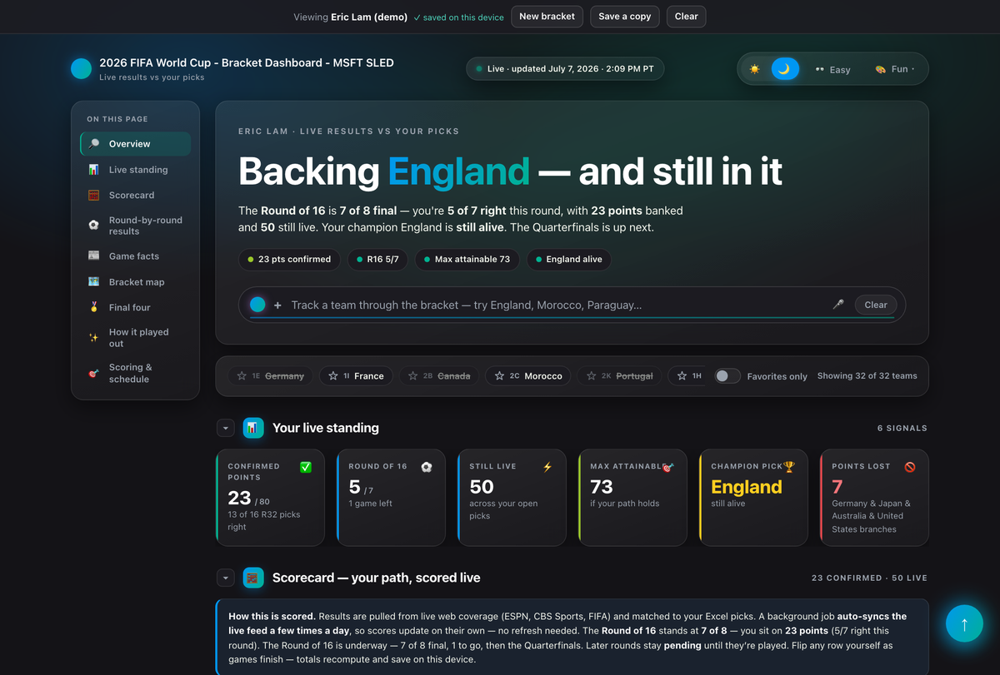
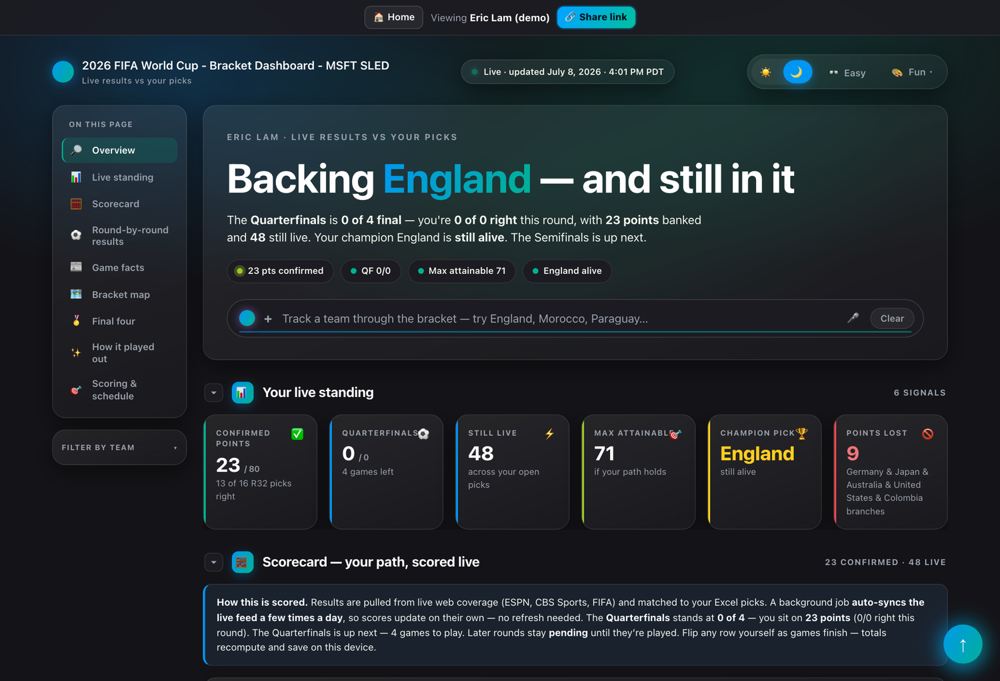

Last week a leader in my org asked if he could share my side project with everyone. Six days earlier, that project was a spreadsheet in my inbox. This is the story of what happened in between — told two ways at once: as the story, and as exactly how it works.
What. An emailed Excel bracket became three live, self-updating, zero-backend World Cup dashboards — personal, then shareable, then social — all running in the browser for $0/month.
How I worked. I stopped prompting and started briefing: a four-part spec (Goal · Context · Source · Expectations), staged plans I reviewed, cheaper models doing the mechanical work, and a Technical Taste Council making the judgment calls. The spec was the product; the code was its output.
Proof. Three public repos, one live app you can open right now, and every decision preserved in commit history.
A coworker taps one button. The standings reshuffle. No login, no server, and nobody's name is exposed anywhere they didn't choose.
Here's the moment that made it real. A coworker opens a link I texted them. No install, no instructions. Their screen fills with a live World Cup dashboard — my bracket, scored against real match results that update themselves three times a day. One button: “Add to my leaderboard.” They tap it, and now we're ranked against each other. Every match that finishes reshuffles the standings automatically.
Total running cost: zero dollars, forever. That's not a shortcut — it turned out to be the whole design.
Hi everyone — welcome. I'm Eric, a Cloud Solution Architect at Microsoft, which means I get to help people make progress with AI. This project was me turning that lens on myself: set a vision, understand the outcome, and use every tool available to shape it into something real. Let me show you how it went — so you can build it too.

| Your bracket | Your browser's storage — your device, not ours |
| A share link | Entirely inside the URL you send — nothing is written anywhere when you make it |
| Rivals you've added | Your browser's storage — same deal |
| Live match results | One JSON file on GitHub, updated 3× a day by a bot |
| Server-side data | None. There is no server. |

Every big build starts as a small annoyance. A leader in my org kicked off a World Cup bracket challenge — the classic office version: he emailed out an Excel workbook, everyone filled in their picks (31 knockout games, a champion, a tiebreaker) and emailed it back, and he tallied scores as the tournament went.
I filled mine out like everyone else. But staring at that spreadsheet, I couldn't stop seeing what it could be. All the drama of a World Cup — the upsets, the busted picks, the “my champion is still alive” tension — flattened into cells. The data was begging to be visual.
I opened Microsoft Cowork and designed what I wished existed: a glassmorphism dashboard, KPI cards for points confirmed and points still attainable, and that BracketMap. The original plan was modest — view it in Cowork, schedule a sync for new results, done.
It wasn't done. Instead of keeping it as a prompt, I packaged the whole design as a markdown build kit — a spec anyone could hand to an AI and get the same dashboard with their own picks. Version 6, 7, 8, each tighter. I didn't know the term yet, but I'd stumbled into the idea that shaped everything after: the spec is the real product. The code is just its output.
Hosting something on GitHub Pages had been on my someday-list for a long time. This was finally the excuse. If my dashboard lived at a URL, I could check it from anywhere, the data could refresh itself, and — this part mattered — the entire build would be preserved in commit history, reverse-engineerable by anyone, including future me.
So I opened GitHub Copilot and we started. What began as one hardcoded HTML file got pulled apart, deliberately, into an actual architecture:
data/*.json, so content and presentation stopped being tangled.build_dashboard.py, turning picks + results into the finished page.fetch_results.py, pulling finished games from FIFA's public feed.125 commits in six days. That number isn't a flex — it's what learning in public looks like. Every commit is me figuring out git, workflows, CI, and deployment by actually doing it, with the receipts preserved.
I wasn't maintaining a webpage. I'd built a small machine that keeps itself current.

Three JSON files are the single source of truth. The generator loads them and derives every pixel — nothing about the story is hardcoded, so every rebuild stays in sync with the data.
_DATA=os.path.join(os.path.dirname(os.path.dirname(os.path.abspath(__file__))),"data")
def _load(_name):
with open(os.path.join(_DATA,_name),encoding="utf-8") as _fh: return json.load(_fh)
P=_load("picks.json"); L=_load("live.json"); T=_load("topology.json")
The sync is a bot on a schedule. It fetches finished games, writes them into
live.json, and redeploys — three times a day, timed to after
each match block. I can close my laptop and the board stays current.
schedule: - cron: "0 22 * * *" # ~6:00 PM ET - cron: "30 1 * * *" # ~9:30 PM ET - cron: "0 6 * * *" # ~2:00 AM ET

Proud of the build kit, I shared it. And then I watched what happened: nothing. The person I shared it with was never going to walk through repo setup, Python scripts, and deployment to get their own dashboard. Of course they weren't — I wouldn't have either, a month earlier.
That stung for about an hour, and then it reframed the whole problem. The friction wasn't in my instructions — it was in the existence of instructions.
Ship the product, not the instructions.
The goal became: you drop in your Excel bracket, and your dashboard just appears. Everything the Python generator did on my machine now had to happen in the visitor's browser instead. Copilot and I ported the whole render engine to client-side JavaScript — parsing the workbook with SheetJS, validating it, scoring it live, drawing the map. For people without a spreadsheet, we added a click-to-pick builder. The tool stopped being mine and became anyone's.
The port is one honest idea: the same inputs, the same output, expressed as a pure function. Give it your picks, the live results, and the fixed tree, and it returns the scored dashboard state — no side effects, no globals.
export function computeState(picks, live, topology) {
// → the fully scored board: every slot, KPI, and card is derived from here
}
A port this size is exactly where subtle bugs breed. So we built a golden test: the JavaScript engine's output is compared byte-for-byte against the original Python's. Not “looks the same” — identical. In hindsight that's an eval: a regression gate that has caught real drift ever since, run against frozen inputs so live results can never make it flap.
| Repo | What it is | Commits | Live |
|---|---|---|---|
| wc26-bracket | A Python generator + a self-syncing results bot → one live dashboard on Pages. | 125 | open ↗ |
| my-wc26-bracket | The engine ported to the browser: drop your Excel bracket, get your own board. | 19 | open ↗ |
| sled-mywcbracket | The social edition: share as a link, compare on a local leaderboard — no backend. | 43 | open ↗ |
By the third build I'd been reading what people actually shipping with AI agents do, and the pattern is consistent: they don't prompt, they brief. So before any code, I wrote one — and every brief since has followed the same four-part shape.
The outcome, stated so sharply you'd know if you missed it.
Constraints, history, who it's for, what already exists.
The ground truth to build from — repos, data, prior art.
Acceptance criteria — what “done” looks like, verifiably.
The expensive model does the thinking twice — once planning, once reviewing — and the cheaper models do the typing. My job moved up a level: setting direction, catching drift, and making the judgment calls.
None of this works without a way to keep a non-deterministic tool honest. In hindsight, the pieces I reached for have names:
My honest gap wasn't syntax — it was taste: knowing when something is quietly over-engineered, badly named, or built for the wrong horizon. So I wrote a council of nine named voices into the repo's instructions, each owning a domain, and had the AI channel them on every non-trivial call.
A build story with no walls is a brochure. Here are the five that actually stopped me — what broke, how I got past it, and the commit that proves it.
The first pushes just… didn't publish. Pages needed to be explicitly enabled and deployed from a workflow, not assumed. I switched to an explicit deploy workflow with auto-enablement (and a two-attempt retry, because it was flaky).
“It's live” is a feature you build, not a checkbox you tick.
wc26-bracket 27cece7 “fix: deploy pages from explicit workflow” · my-wc26-bracket 965af7d “fix: enable GitHub Pages auto-enablement in deploy workflow (#1)”
The sync committed new results with the default token — and GitHub, by design,
doesn't fire other workflows from those commits. So the site quietly stopped
redeploying. The fix: have the sync job explicitly dispatch the deploy, with the
actions: write permission to do it.
Automation has blast radius; know what your bot is and isn't allowed to trigger.
wc26-bracket 7d24710 “fix: make auto-sync commits actually trigger a Pages deploy” · 9bab6f6 “ci: give the sync job actions:write so it can trigger the Pages deploy”
The golden test first compared against live results — which meant
every finished game would “break” the build for a reason that wasn't a bug. I froze the test
inputs into tests/fixtures/ so the eval is hermetic: it only
fails when the code changes.
A test that depends on the outside world isn't a test — it's a pager that cries wolf.
sled-mywcbracket 003c056 “Stage 0: pool pilot — hermetic golden snapshot, CI tests, CLAUDE.md/SPEC.md, pilot branding”
Opening the demo (or a shared link) reused the same storage as your own bracket — so peeking at someone else's board could wipe your what-if edits. The fix: stash your state before showing a borrowed bracket, restore it after, and make viewing strictly view-only.
The scariest bugs are the silent ones. No surprise data loss, ever.
my-wc26-bracket 6f0d64d “UX: demote Import to a restore link, demo is preview-only …” · sled-mywcbracket 97e3c67 “Stage 1: share links — … view-only mode”
The “actual path” view read from your pick tree, so once your picks busted, real advancers fell off and left holes. I rebuilt it to read each slot straight from results — real occupant if decided, a dashed “Winner M97” placeholder if not — independent of your picks.
Derive from the source of truth, not from a stale copy of it.
sled-mywcbracket f60c0f2 “Rename to sled-mywcbracket + nav fixes + actual-path bracket rebuild” · wc26-bracket 1b4aa94 “Fix bracket map dropping actual advancers …”
The elixir I came back with wasn't the dashboard. It was a way of working I can repeat on anything: set a vision, understand the outcome, write the brief, and shape it with judgment.
A leader in my org asked if he could share it broadly. Coworkers started opening each other's links and comparing boards. For a weekend fan project, that's the traction that matters — people chose to use it and to pass it on.
I'm honest that “a leader asked to share it” is a signal, not a metric. If I kept going, I'd instrument the shares and the count of active leaderboards — the two numbers that would tell me whether the social loop actually compounds.
The codebase is public. If you see a better way, I genuinely want to hear it — that's half the reason it's out in the open.
That's the whole method — and it turned a spreadsheet into three live apps in a weekend. Open it, read the code, take what's useful.
The big idea: social, with no backend
Individual dashboards worked. But brackets are a social game — the whole point is seeing how you stack up against your friends. Every obvious way to build that meant a backend: accounts, a database, hosting bills, and — the real dealbreaker — a central place where my coworkers' real names would live, whether they opted in or not.
The question I kept turning over: could a share link itself carry the bracket, so adding someone to your leaderboard never touches a server at all?
It fits in a link.
A bracket is 31 win-or-lose choices — 31 bits — plus a display name and a tiebreaker. Encoded, that's about 140 characters riding in the URL fragment (the part after
#). And by HTTP's own rules, browsers never send the fragment to any server. Not to GitHub, not to anyone. The privacy isn't a policy — it's physics.
Under the hood The whole bracket, encoded into a URL ▾
The wire format is deliberately boring and debuggable: base64url of a tiny JSON object. The clever part is the bit order — later rounds depend on earlier picks, so encode and decode must both walk the tree in the same canonical order.
export function encodeShare(picks, topology) { const S = deriveStructure(topology); const sel = {}; picks.r32.forEach(m => { sel[m[0]] = m[4]; }); S.r16codes.forEach((c, j) => { sel[c] = picks.r16_win[j]; }); // …qf, sf, final… let bits = ""; for (const c of codeOrder(S)) { const [a, b] = teamsFor(S, c, sel); bits += sel[c] === a ? "0" : "1"; } const payload = { v: 1, b: bits, n: String(picks.entrant || ""), t: picks.tiebreaker | 0 }; return b64url(new TextEncoder().encode(JSON.stringify(payload))); }Decoding reverses it, then re-validates against the fixed tree. A truncated or newer-version link fails with a friendly message instead of rendering garbage — Hanselman's rule: every error says what broke.
#b=base64url( JSON { v:1, b:"<31 chars of 0|1>", n:"display name", t:tiebreaker } )Nothing is written when you generate a link. Rivals live in one browser key; the sync bot only ever rewrites the shared results file.